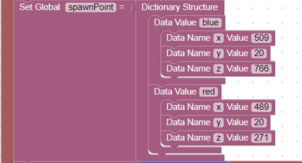

<h1>Beds</h1>
The team bed controls whether or not a player can respawn<br>
If their team bed has been destroyed, the player can only spawn as a spectator<br>
The team spawn points can be used for bed locations<br> 
This code defines team spawn points<br>
<br>
<hr>
<center></center>